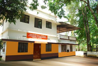

About Us
 Inspired by R.S.S ideologies,Sanjeeevani samithi,a charitable organisation was formed in the year 1986 primarily to take over the management of CNN Schools,Cherpu,the then management of which,Viz Chittur Namboodiri Illam found it impossible to run the Schools due to various reasons. Sanjeevani Samithi was registered under the Travancore-Cochin Charitable Societies Act under No.37/86 and is having its corporate office functioning presently in the Sanjeevani Balikasadanam Building Urakam situated about 12KMs south of Thrissur on the Thrissur Kodungallur road.
Mission and Vision
Following are the objectives:-
- To run educational institutions and provide quality education with emphasis on Indian culture and tradition
- To run orphanages to provide asylum to orphaned children and to make them responsible citizens.
- To run old age homes for the benefit of old people getting isolated from their children/relatives.
- To provide guidance and help to rural Hindu women to make them self-supporting by forming small co-operative units and taking up various production/agriculture activities.
- To take up any other social activities for the upliftment of poor.
Milestones
In the year 1986 we took over the management of CNN Schools, Cherpu from the then manager Shri.Chittur Sankaran Namboodiri,Chittur Mana,Cherpu. CNN Schools started in memory of Chittur Narayana Namboodiri were then 76 years old. After Sanjeevani Samithi started functioning,several developmental activities were taken up. Higjhlights are:-
- Sree Sankara Sisu Vidhya Mandiram was started in 1986.
- Sanjeevani Balikasadanam, orphanage for girls was started at Urakam in the year 1993.
- Swami Agamananda Balasadanam orphanage for boys at Palazhy(Pudukkad)was started in the year 1996.
- CNN Higher Secondary School was started in the Self Financing Sector in the year 2002.
- CNN Teachers’ Training Institute (Self Financing) was started in the year 2004.
- Sanjeevani Vocational Training Centre was started in 2007.
Sanjeevani Samithi has now under its management the following institutions.

- CNN Boys High School (Aided) with 985 Students and 40 staff.
- CNN Girls High School (Aided) with 843 Students and 38 staff.
- CNN Boys LP School (Aided) with 321 Students and 8 staff.
- CNN Girls LP School (Aided) with 358 Students and 8 staff.
- CNN Teacher’s Training Institute
- CNN Higher Secondary School
- Sree Sankara Sisu Vidhya Mandiram Nursery School (English Medium) with 293 students.
- Sanjeevani Vocational Training Centre(Computer Training,Tailoring,Type writing etc.)
- Sanjeevani Balikasadanam (Girls Orphanage) at Urakam with 75 inmates.
- Swami Agamananda Balasadanam (Boys Orphanage) at Palazhy (Pudukad) with 35 inmates.
People Behind
When Sanjeevani Samithi was started in the year 1986, it had the limited purpose of taking over the management of CNN Schools. Over the years several developmental activities had taken place. Consistent hardwork with dedication and total commitment of Governing Council members and several other workers has contributed to the growth of Sanjeevani Samithi to what it is today.
1986 Founder Members:-
- E.Balagopal - President
- P.K.Damodharan - Secretary
- T.K.Venugopal - Treasurer
Governing Council Members since 1989
| Year | President | Secretary | Treasurer |
|---|---|---|---|
| 1989 | E.Balagopal | P.K.Damodharan | T.K.Girijan |
| 1992 | E.Balagopal | P.K.Damodharan | P.K.Prathapavarma Raja |
| 1995 | E.Balagopal | P.K.Damodharan | P.M.Bhaskaran |
| 1998 | P.M.Bhaskaran | P.K.Damodharan | E.S.Menon |
| 2001 | P.M.Bhaskaran | P.N.Easwaran | E.S.Menon |
| 2004 | E.S.Menon | P.N.Easwaran | C.G.Unniraj |
| 2007 | P.I.Somanathan | P.N.Easwaran | E.Balagopal |
Developmental Activities
Sanjeevani Samithi intends to take up the following developmental activities in the coming years.
1. An auditorium with 1000 seating capacity in the CNN Schools Campus to commemorate the centenary celebrations of the schools with participation and help of old students and well wishers. Estimated cost Rs.25 Lakhs.